Features¶
Overview¶
With the great success of deep learning,DNN-based techniques have been widely used in CTR estimation task.
DNN based CTR estimation models consists of the following 4 modules:
Input,Embedding,Low-order&High-order Feature Extractor,Prediction
- Input&Embedding
The data in CTR estimation task usually includes high sparse,high cardinality categorical features and some dense numerical features.
Since DNN are good at handling dense numerical features,we usually map the sparse categorical features to dense numerical through embedding technique.
For numerical features,we usually apply discretization or normalization on them.
- Feature Extractor
Low-order Extractor learns feature interaction through product between vectors. Factorization-Machine and it’s variants are widely used to learn the low-order feature interaction.
High-order Extractor learns feature combination through complex neural network functions like MLP,Cross Net,etc.
Models¶
FNN (Factorization-supported Neural Network)¶
According to the paper,FNN learn embedding vectors of categorical data via pre-trained FM. It use FM’s latent vector to initialiaze the embedding vectors.During the training stage,it concatenates the embedding vectors and feeds them into a MLP(MultiLayer Perceptron).
FNN api link
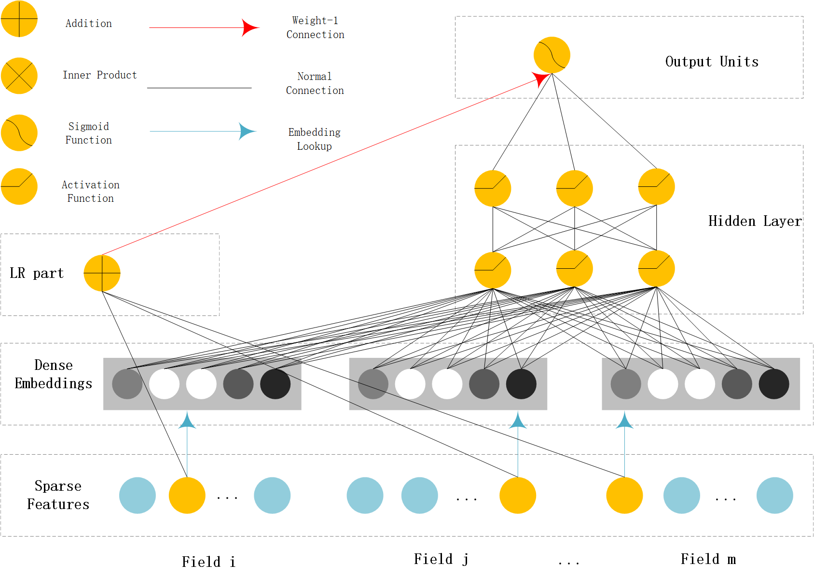{kind=link}
PNN (Product-based Neural Network)¶
PNN concatenates sparse feature embeddings and the product between embedding vectors as the input of MLP.
PNN api link
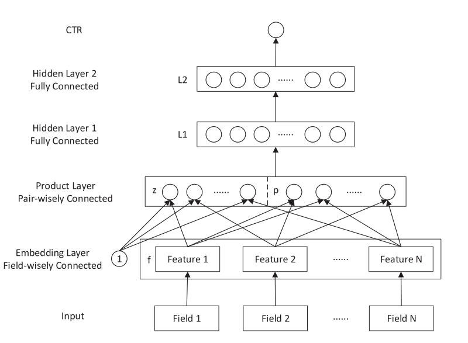{kind=link}
Wide & Deep¶
WDL’s deep part concatenates sparse feature embeddings as the input of MLP,the wide part use handcrafted feature as input. The logits of deep part and wide part are added to get the prediction probability.
WDL api link
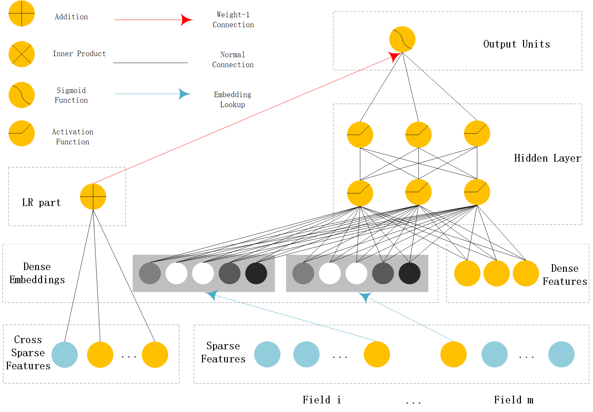{kind=link}
DeepFM¶
DeepFM can be seen as an improvement of WDL and FNN.Compared with WDL,DeepFM use FM instead of LR in the wide part and use concatenation of embedding vectors as the input of MLP in the deep part. Compared with FNN,the embedding vector of FM and input to MLP are same. And they do not need a FM pretrained vector to initialiaze,they are learned end2end.
DeepFM api link
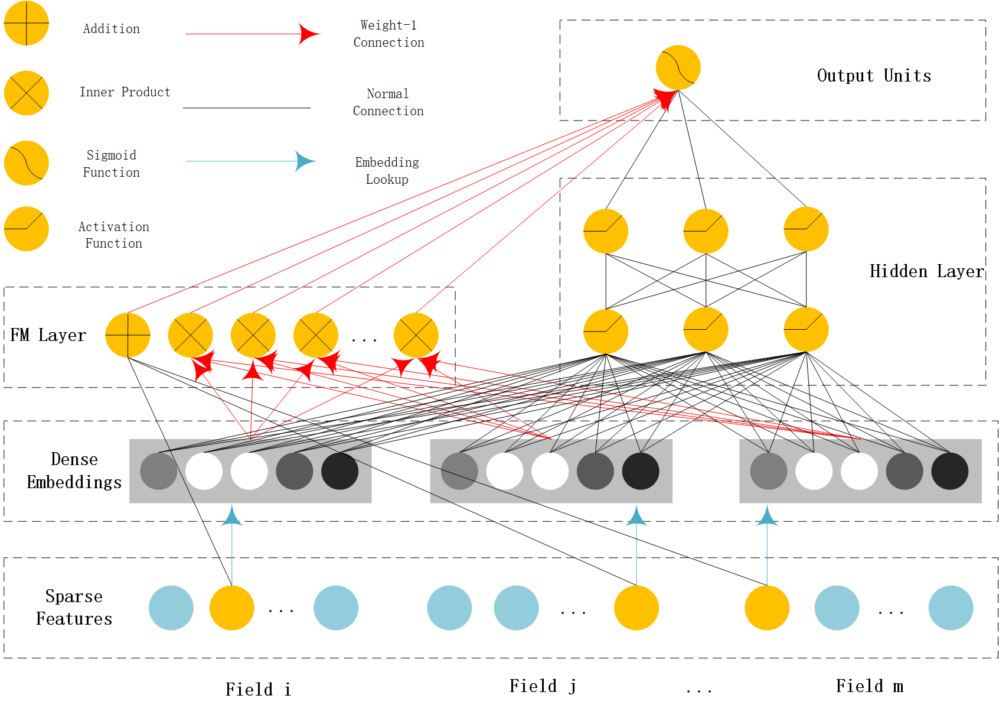{kind=link}
MLR(Mixed Logistic Regression/Piece-wise Linear Model)¶
MLR can be viewed as a combination of 2*m LR model,m is the piece(region) number. m LR model learns the weight that the sample belong to each region,another m LR model learn sample’s click probability in the region. Finally,the sample’s CTR is a weighted sum of each region’s click probability.Notice the weight is normalized weight.
MLR api link
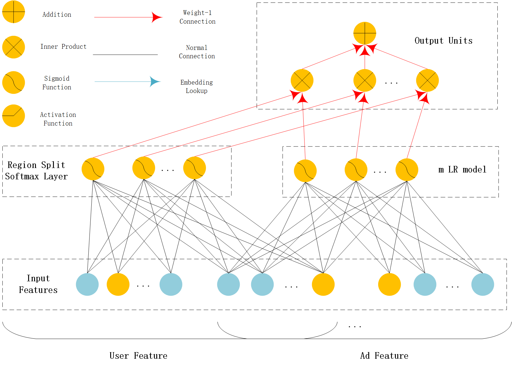{kind=link}
NFM (Neural Factorization Machine)¶
NFM use a bi-interaction pooling layer to learn feature interaction between embedding vectors and compress the result into a singe vector which has the same size as a single embedding vector. And then fed it into a MLP.The output logit of MLP and the output logit of linear part are added to get the prediction probability.
NFM api link
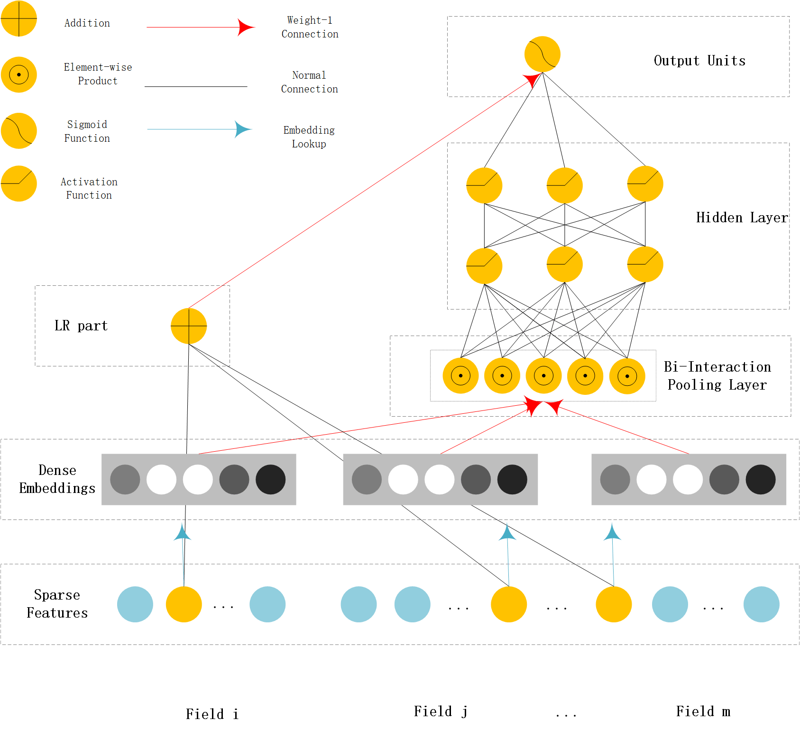{kind=link}
AFM (Attentional Factorization Machine)¶
AFM is a variant of FM,tradional FM sums the inner product of embedding vector uniformly. AFM can be seen as weighted sum of feature interactions.The weight is learned by a small MLP.
AFM api link
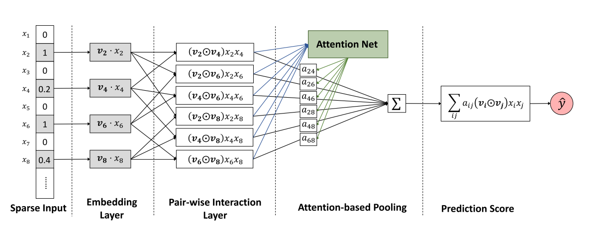{kind=link}
DCN (Deep & Cross Network)¶
DCN use a Cross Net to learn both low and high order feature interaction explicitly,and use a MLP to learn feature interaction implicitly. The output of Cross Net and MLP are concatenated.The concatenated vector are feed into one fully connected layer to get the prediction probability.
DCN api link
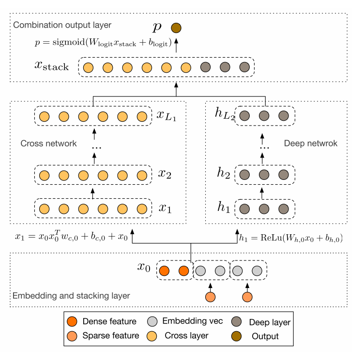{kind=link}
DIN (Deep Interest Network)¶
DIN introduce a attention method to learn from sequence(multi-valued) feature. Tradional method usually use sum/mean pooling on sequence feature. DIN use a local activation unit to get the activation score between candidate item and history items. User’s interest are represented by weighted sum of user behaviors. user’s interest vector and other embedding vectors are concatenated and fed into a MLP to get the prediction.
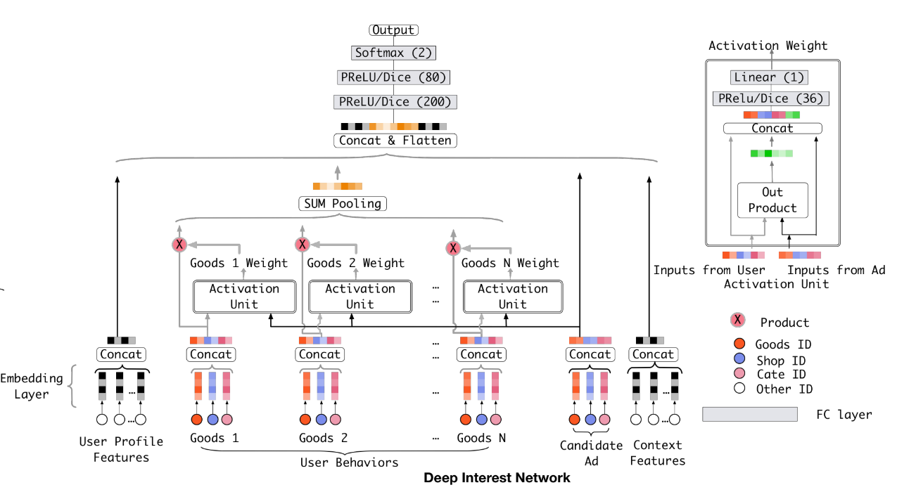{kind=link}
xDeepFM¶
xDeepFM use a Compressed Interaction Network (CIN) to learn both low and high order feature interaction explicitly,and use a MLP to learn feature interaction implicitly. In each layer of CIN,first compute outer products between \(x^k\) and \(x_0\) to get a tensor \(Z_{k+1}\),then use a 1DConv to learn feature maps \(H_{k+1}\) on this tensor. Finally,apply sum pooling on all the feature maps \(H_k\) to get one vector.The vector is used to compute the logit that CIN contributes.
xDeepFM api link
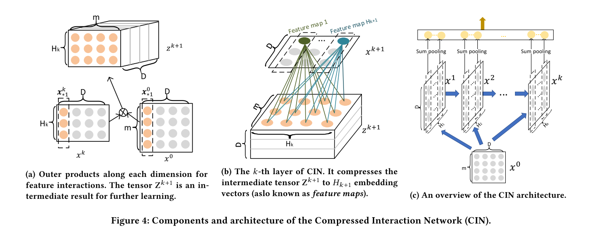 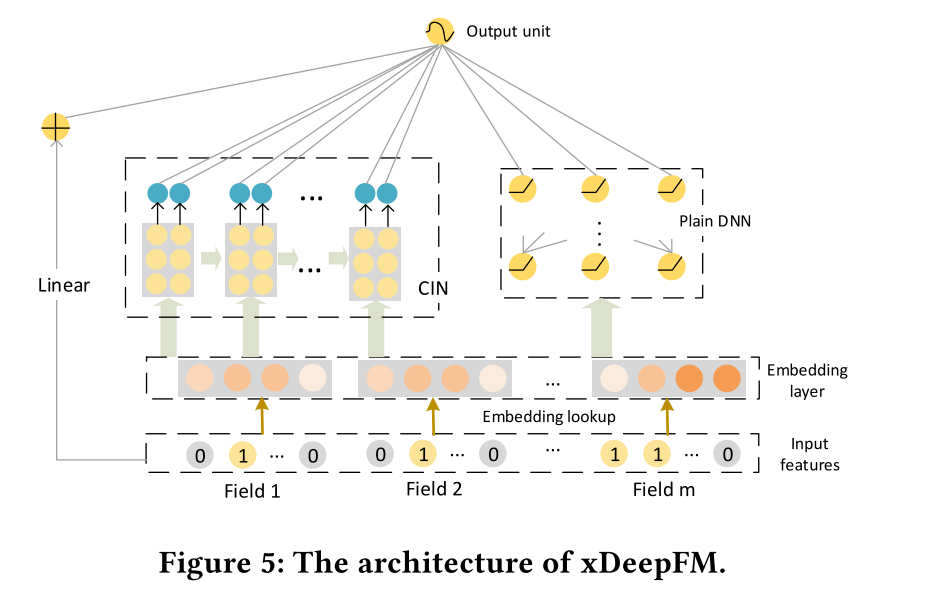{kind=link}
{kind=link}
AutoInt(Automatic Feature Interaction)¶
AutoInt use a interacting layer to model the interactions between different features. Within each interacting layer, each feature is allowed to interact with all the other features and is able to automatically identify relevant features to form meaningful higher-order features via the multi-head attention mechanism. By stacking multiple interacting layers,AutoInt is able to model different orders of feature interactions.
AutoInt api link
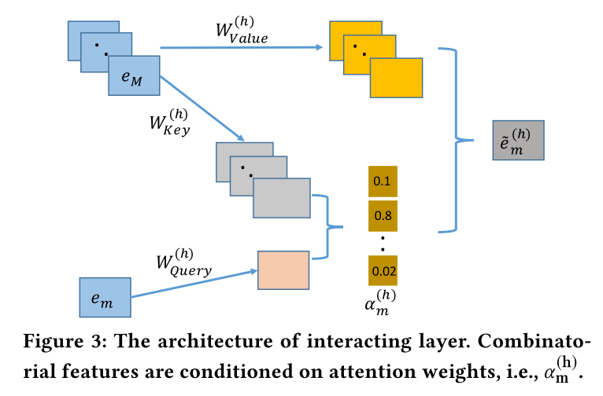 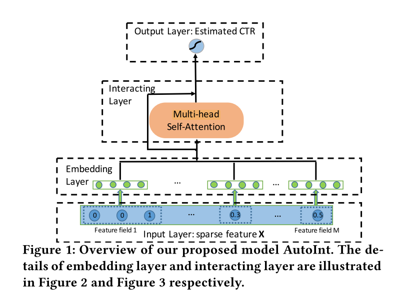{kind=link}
{kind=link}